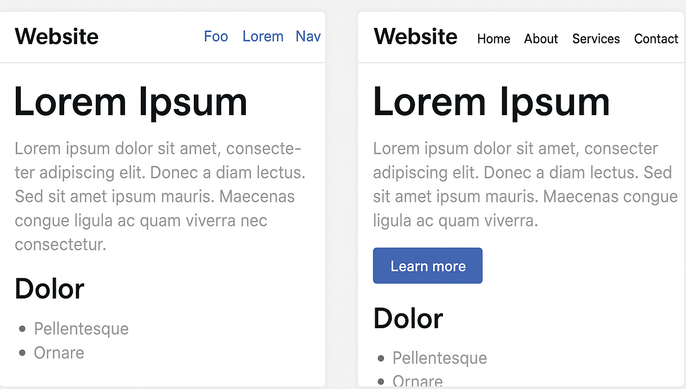
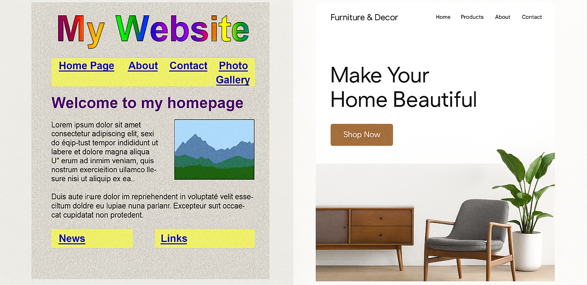

Calendrier Technologie 4ème - 2025/2026
| Date | Cours | Date | Cours |
|---|
Prise en main du labo numérique, règles & diagnostic CRCN
Compétences visées :
"Cadre de Référence des Compétences Numériques"
- Environnement numérique : se repérer dans un poste de travail / ENT / cloud.
- Information et données : ouvrir, sauvegarder, classer un fichier.
- Protection & sécurité : adopter des règles de base (mots de passe, respect charte).
- Collaboration : partager un document simple.
Accueil
Scannez le QRCode suivant et répondez à la question
Si vous ne parvenez pas à scanner le QRCode, vous pouvez cliquer sur le lien suivant :
WooclapLe code pour rejoindre est le suivant : XQPLYA
Découverte du labo numérique & règles de fonctionnement
- Je m’assois correctement et je respecte le matériel
- Je ne tire pas sur les fils, je branche/débranche avec soin
- Je règle le son pour moi uniquement
- Je n’installe pas de logiciels / je ne vais pas sur des sites interdits
- Je range mes fichiers, je laisse le bureau propre
- Je travaille en binôme, je respecte mon partenaire
Diagnostic CRCN – Mission numérique
Lien vers le référentiel : CRCN
Par groupe de 2, vous allez réaliser les missions suivantes :
Mission 1 – Fichiers égarés (Information & données)- Ouvre un dossier, crée un fichier, renomme ce fichier, crée un sous-dossier, range ton fichier dans le sous-dossier
- Capture d’écran finale = preuve
- Télécharger le document modèle avec le lien suivant : Document à télécharger
- Renommez le comme suit : presentation_nom_prenom
-
Ouvrez le et remplissez le avec les infos suivantes:
- Nom
- Prénom
- Hobby / Passions
- Ce que vous voudriez faire comme études
- Où vous voulez faire vos études
- Ce que vous voudriez faire comme métiers plus tard
- Pourquoi faire ce métiers
-
Copiez le dans le drive de la classe à l'adresse suivante (directement depuis l'ordinateur) :
S:\4A\Espace d'échange\techno - Changez de poste et vérifiez que votre fichier s'y trouve
Répondre à la question suivante : "Un mot de passe FORT, c'est quoi ?"
Identifier le mail frauduleux :
|
|
Découvrir le fil rouge : besoins du collège, idéation & vote
Compétences visées :
- Analyser un besoin (repère BO 2024 : identifier usages, contraintes, fonctions).
- Imaginer des solutions (idéation créative).
- Exprimer et défendre un choix (argumenter et voter).
- Collaboration & communication (CRCN : travail collaboratif, outils numériques).
1. Accroche – “Qu’aimeriez-vous améliorer au collège ?”
Si vous aviez une baguette magique pour améliorer un aspect du collège, qu’est-ce que vous changeriez ?
Un élève par binomes sur son téléphone, l'autre sur l'ordinateur.
Pour répondre, veuillez vous rendre ici : Wooclap et saisir le code ci-dessous
Ce que vous venez de faire, c’est exprimer des besoins. En technologie, chaque projet commence ainsi : on part d’un besoin, puis on imagine des solutions. Dans un instant, vous allez travailler en groupe pour préciser ces besoins.
2. Phase d’observation – Identifier des besoins concrets
Exercice par groupe de 4 (et un groupe de 5) Vous êtes des enquêteurs du collège. Dans chaque domaine proposé, notez dans un fichier texte, 2 besoins maximum que vous observez ou imaginez. Vous devez en avoir 8 au total.
-
Les domaines sont les suivants :
- Vie scolaire
- Énergie & environnement
- Confort & accessibilité
- Vie numérique
Maintenant que vous avez repéré et partagé des besoins, il est temps d’imaginer des solutions créatives. C’est ce qu’on appelle l’idéation : transformer un besoin en projet possible.
3. Idéation – Brainstorming créatif
-
Maintenant nous allons passer de l'observtion des besoins à la génération d'idées de solutions techniques.
- Budget limité (solution quasi gratuite)
- Accessible aux élèves en situation de handicap
- Doit être éco-responsable
- Utilisable à distance
- Réalisable uniquement avec des ordinateurs/simulateurs
- Facilement améliorable dans le temps
Nous allons introduire la notion de contrainte comme moteur de la créativité, et apprendre a formaliser une idée de manière claire et communicable.
Cette contrainte, c’est comme une règle du jeu. Elle va guider votre imagination.
Les contraintes sont les suivantes :
Les contraintes vont être répartie par le professeur.
Chaque groupe reprends en suite les besoins de l'exercice précédent et n'en choisit qu'un qu'il considère comme prioritaire / intéressant.
Brainstorming guidé
-
Par groupe vous allez répondre aux questions suivantes :
- Quel est le besoin ? (1 phrase simple)
- Quelle solution imaginez-vous ? (idée technique réalisable avec un ordi/simulateur)
- Pourquoi est-ce intéressant ? (avantages → utile, innovant, faisable)
-
Exemples réalistes :
-
Besoin : “Réduire le gaspillage à la cantine” →
Solution : “Application web avec sondage quotidien pour réserver son repas”
(contrainte = doit être éco-responsable). -
Besoin : “ENT compliqué” →
Solution : “Créer un tableau de bord simplifié (mock-up Canva/Figma)”
(contrainte = accessible aux 6ᵉ).
Préparation de la mini-affiche
-
Chaque groupe crée un support visuel clair avec :
- Nom du projet (accrocheur, ex : EcoCantine, Collège+, EasyENT)
- Besoin ciblé (phrase simple)
- Solution imaginée (2-3 phrases ou schéma)
- Avantages (liste de 2 ou 3)
Vous venez de transformer un besoin en une idée de projet. Maintenant, nous allons présenter vos propositions et choisir ensemble celle qui sera notre fil rouge de l’année.
4. Présentation & vote
- Chaque groupe présente son idée en 2 minutes max.
-
Les élèves votent a main levé, avec 3 critères simples :
- Utile (répond bien à un vrai besoin ?)
- Réaliste (peut-on le faire en techno avec ordis/simulateurs ?)
- Innovant (originalité, créativité)
- Chaque élève distribue 3 points (1 par critère).
Le fil rouge choisi guidera une partie de vos activités de l’année : vous apprendrez des outils pour concevoir, tester et présenter une solution technique.
Cycle de vie (ACV) d’un service/objet numérique : impacts clés
Compétences visées
- Identifier les étapes du cycle de vie d’un produit ou service.
- Associer chaque étape à un impact environnemental/énergétique.
- Comparer des solutions techniques selon des critères durables.
- Utiliser un outil numérique simple pour représenter des données.
1. Accroche
“Que devient ton smartphone ?”
2. Découverte – Les étapes du cycle de vie
3. Atelier pratique – Étudier un cas concret
Travail en binômes sur ordinateurs, chaque binôme choisit un objet/service numérique :
- smartphone
- ordinateur portable
- console de jeux
- clé USB
- application de streaming
- service cloud
Téléchargez la fiche d’activité ici : cycle_vie_objet.ods
Étape A – Fiche ACV simplifiée
Chaque binôme remplis les 5 colonnes de la fiches, en se basant sur des recherches en ligne.
(Il est possible d'utiliser des images pour illustrer).
Étape B – Impacts chiffrés
Effectuez des recherches en lignes pour trouver des données chiffrés sur les impacts environnementaux/énergétiques de votre objet/service.
Notez sous chaques étape (dans la case en dessous), les données trouvées (ex : kg de CO2, kWh, litres d’eau, etc).
Étape C – Discussion flash
Chaque binôme choisit une idée pour réduire l'impact de son objet/service.
Étape D – Présentation
Chaque binôme présente son objet/service, les étapes du cycle de vie, les impacts clés et une idée pour réduire ces impacts.
Ergonomie & accessibilité : audit d’une appli du quotidien
Compétences visées
- Identifier des critères d’ergonomie (lisibilité, navigation, esthétique, efficacité)
- Découvrir les principes d’accessibilité numérique (taille des polices, contraste, alternatives visuelles/sonores).
- Porter un regard critique sur un service numérique courant.
- Communiquer un avis argumenté avec exemples concrets.
1. Accroche
Quelle appli utilises-tu le plus ?
Et si on vérifiait si ces applis sont faciles à utiliser… pour tout le monde ?
2. Découverte – Qu’est-ce qu’une appli ergonomique et accessible ?
Définition de l'ergonomie : "L'ergonomie, c'est rendre un objet ou un service facile et agréable à utiliser."
Parmis les différents critères d'ergonomie, nous pouvons notamment citer :
- Lisibilité (texte clair, contrastes)
- Navigation (facile, rapide, intuitive) 
- Efficacité (réduit le nombre de clics, rapide)
- Esthétique (plaisir visuel, pas trop d’éléments) 
A gauche les éléments surcharge le site dans un placement chaotique, beaucoups de couleurs qui ne vont pas ensemble et beaucoup de texte, a droite, les éléments sont bien visibles, bien séparés, placés sur un fond clair d'une façon qui rend la lecture facile pour l'utilisateur
A gauche, les éléments de navigation sont peu visibles, avec des nom qui ne veulent pas dire grand chose, a droite, les éléments de navigation sont bien visibles, avec des noms clairs et compréhensibles
A gauche, beaucoup de boutons, des placements confus, a droite, un placement clair, avec peu de boutons et des actions simples, augmentant la rapidité et l'éfficacité d'utilisation
A gauche, beaucoup de couleurs, qui ne vont pas ensemble, des éléments qui se chevauchent, a droite, un design épuré, avec des couleurs qui vont bien ensemble et un placement clair des éléments
Définition de l'accessibilité : "L'accessibilité, c'est faire en sorte que tout le monde puisse utiliser un objet ou un service, même avec des difficultés (vue, motricité, etc)."
Exemples concrets : mode sombre, lecteur vocal, sous-titres automatiques, commandes vocales.
3. Atelier pratique – Audit d’appli
Travail en groupes de 4 élèves sur ordinateurs.
Étape A – Choix de l’appli
En fonction des réponses du sondage précédent, chaque groupe choisit une application / site.
Étape B – Grille d’audit simplifiée
Créer un document Calc et remplissez la grille d’audit avec des notes de 1 à 5 (1 = mauvais, 5 = excellent) pour chaque critère.
- Lisibilité du texte
- Facilité de navigation
- Rapidité/efficacité
- Esthétique agréable
- Options d’accessibilité disponibles (mode sombre, sous-titres, commandes vocales, taille police…) Ajout libre :
- Ce qu’on aime
- Ce qu’on améliorerait
Étape C – Résultats & mini-pitch
Chaque groupe prépare une phrase bilan : “Notre appli est ergonomique mais manque d’accessibilité car…”
Présentation rapide en classe (~1min par groupe).
4. Mise en commun & débat
- Est-ce qu’une appli peut être belle mais difficile à utiliser ?
- Pourquoi penser à l’accessibilité est important pour tous ?
Usages & interactions des objets et systèmes techniques
Compétences visées
- Comprendre ce qu’est une donnée personnelle.
- Identifier les droits RGPD (consentement, droit à l’oubli, portabilité).
- Reconnaître des situations à risque et adopter un comportement responsable.
- Débattre et argumenter de façon constructive.
1. “Quelles données donnes-tu sans y penser ?”
- As-tu déjà donné ton nom, ton âge, ton mail, ta photo… en ligne ?
- Le RGPD est une règle européenne pour protéger ces données.
2. Découverte – Les bases du RGPD
-
Toutes les explications suivantes viennent du site de la “CNIL” (Commission Nationale de l’Informatique et des Libertés)
- RGPD : de quoi parle-t-on ?
- Les droits pour maîtriser vos données personnelles
Mini-quiz RGPD
- Ton collège publie une photo de classe sans demander l’accord des parents. Pas conforme (besoin d’autorisation).
- Tu supprimes ton compte TikTok et toutes tes données disparaissent. Conforme (droit à l’oubli).
- Une appli gratuite de jeux demande ton âge et ton prénom avant de jouer. Conforme (collecte possible si justifiée, mais doit rester proportionnée).
- Une appli de lampe torche te demande l’accès à ta localisation et tes contacts. Pas conforme (collecte excessive par rapport à l’usage).
- Tu veux récupérer tes photos stockées sur un service cloud, tu peux les télécharger en un clic. Conforme (droit à la portabilité).
- Un site t’impose d’accepter tous les cookies pour accéder au contenu, sans choix possible.Pas conforme (le consentement doit être libre et éclairé).
3. Étude de cas pratique – “AppliMystère”
-
Travail en groupes de 3-4. Chaque groupe va recevoir une fiche scénario (PDF ci-dessous):
- Applis Mystere Tâches du groupe :
- Identifier les données collectées.
- Repérer les problèmes éthiques/RGPD (ex. absence de consentement clair).
- Proposer des solutions correctives (ex. case à cocher, accès limité).
- Préparer un mini avis citoyen (2 / 3 phrases : “Cette appli respecte/ne respecte pas le RGPD car…”).
4. Débat collectif – “La frontière entre confort et intrusion”
- Mise en commun : chaque groupe lit son avis citoyen.
-
Débat encadré :
-
La règle du débat : “On écoute, on respecte, chacun peut donner son avis.”
- “Est-ce que c’est grave si une appli vend tes données si elle reste gratuite ?”
- “Mieux vaut payer un peu ou donner ses données ?”
- “Peut-on utiliser les données pour de bonnes causes (santé, sécurité) ?”
Pas de bonne ou mauvaise réponse, on cherche à comprendre les enjeux
-
-
Équilibrer les arguments
-
Côté innovation :
- Les données permettent de créer des services utiles (GPS, recommandations, santé connectée).
- Elles peuvent améliorer le confort et l’efficacité.
-
Côté protection :
- Les données personnelles sont liées à la vie privée, il faut du consentement clair.
- Une fuite ou un usage abusif peut avoir des conséquences graves (cyberharcèlement, publicité ciblée agressive).
-
Côté innovation :
Comparer des solutions techniques : grille multicritères
Compétences visées
- Identifier et hiérarchiser des critères de choix d’une solution technique.
- Utiliser un tableur ou une grille pour comparer deux objets ou services.
- Argumenter un choix raisonné en fonction de plusieurs critères.
- Coopérer pour prendre une décision collective.
1. “Tu choisis quoi ?”
Vous allez lever la main pour voter pour l'un des 2 objets suivants: trotinette électrique vs vélo classique
Selon vous, lequel est le meilleur ?
2. Découverte – Les critères de choix
Il existe 5 grand critères usuels :
- Prix (achat et entretien)
- Consommation d’énergie
- Durée de vie
- Réparabilité
- Impact environnemental
-
Ajout possible : confort, sécurité, esthétique, innovation.
3. Atelier pratique – Comparer avec une grille multicritères
Travail en groupes de 3-4 élèves.-
Étape A – Choix du duel
- Ampoule LED vs incandescente
- Ordinateur neuf vs reconditionné
- Vélo classique vs trottinette électrique
- Bouteille plastique vs gourde en métal
Chaque groupe choisit une comparaison parmi :
-
Étape B – Remplir la grille
- Les critères usuels
- Produit A
- Produit B
- Note (1 à 5)
- Commentaire Pour chaque ligne, les critères usuels (voir ci-dessus)
Chaque groupe crée un tableau dans LibreOffice Calc, avec pour les colonnes:
| Les critères usuels | Bouteille plastique | Gourde en métal | Note (1 à 5) | Commentaire |
| Prix | très bas | plus élevè | Bouteille = 5 / Gourde = 3 | La gourde est un investissement |
| Consommation d'énergie | ... | ... | ... | ... |
| Durée de vie | ... | ... | ... | ... |
| Réparabilité | ... | ... | ... | ... |
| Impact environnemental | ... | ... | ... | ... |
Ajouter une ligne a la toute fin du tableau pour faire la somme des notes.
Résultat : le produit avec le score le plus élevé est "objectivement" le meilleur choix.
Métiers & découverte virtuelle d’un fablab / atelier
Compétences visées
- Découvrir des métiers scientifiques, techniques et numériques.
- Comprendre le rôle d’un fablab / atelier collaboratif.
- Identifier les machines, outils et logiciels utilisés dans la conception et la fabrication.
- Utiliser des ressources numériques interactives pour explorer un environnement professionnel.
1. Accroche – “Et toi, quel métier t’attire ?”
Si tu devais choisir un métier lié à la techno/numérique, lequel ?
Dans les fablabs, on retrouve des passionnés et des pros qui inventent, conçoivent et réparent… voyons ça !
2. Découverte – Qu’est-ce qu’un fablab ?
- Un fablab (laboratoire de fabrication) est un espace équipé de machines-outils, imprimantes 3D, découpeuses laser, etc.
- On y trouve des passionnés, des makers, des ingénieurs, des designers, des techniciens…
- Leur mission : aider à concevoir, prototyper et fabriquer des objets innovants.
- Exemples de projets : prothèses imprimées en 3D, robots éducatifs, meubles sur mesure, etc.
3. Atelier pratique – Visite virtuelle & métiers
Étape A – Exploration libre
Le Fablab que vous allez visiter est trouvable ici : Openfactory
Pour accéder directement à la visite, c'est ici : Visite virtuelle du Fablab
Étape B – Fiche mission “Qui fait quoi ?”
Vous disposez de 40 minutes pour explorer le fablab et remplir le fichier demandé ci-dessous.
Dans un fichier (texte / calc), notez :
- Le nom de la machine
- Exemple d'utilisation (prototypage de pièce, maquette, réparation, etc...)
- Métiers associé (designer, technicien, ingénieur, artisan, maker, codeur, etc...)
- Compétences nécessaire (créativité, précision, codage, etc...)
Étape C – Restitution flash
Chaque groupe partage 1 métier + 1 machine + 1 usage.
Chaînes d’information & d’énergie : cas d’un objet connecté
Compétences visées
- Identifier les fonctions principales d’un objet connecté.
- Représenter un système à l’aide du schéma fonctionnel MEI (matière–énergie–information).
- Distinguer les chaînes d’information (capteurs, traitement, communication) et d’énergie (alimentation, transformation, action).
- Utiliser un simulateur numérique pour visualiser le fonctionnement d’un objet connecté.
1. Accroche – “Qu’y a-t-il dans un objet connecté ?”
Selon vous, dans une montre connecetée, une enceinte bluetooth ou encore une ampoule connectée, qu’est-ce qui se passe quand on appuie sur ON / que l'on l'allume ?
On va décortiquer ce qui se passe en deux chaînes : l’information et l’énergie.
2. Découverte – Chaînes d’information & d’énergie
Qu’est-ce qu’une chaîne d’information ?
C’est la partie du système qui permet à l’objet technique de recevoir des données, les analyser et donner des ordres.Voyez ça comme le parcours de l’information dans un objet connecté, depuis la détection (capteur) jusqu’à l’action (affichage, son, mouvement).
- Capteurs (Acquérir) : perçoivent l’environnement (lumière, son, température, appui sur un bouton…).
- Traitement (Traiter) : une puce électronique ou un microcontrôleur analyse ces données.
- Communication / commande (Communiquer) : transmet un ordre (ex. “allume la LED”, “envoie un son”, “envoie une notification”).
Qu’est-ce qu’une chaîne d’énergie ?
C’est la partie du système qui fournit l’énergie nécessaire pour que l’objet fonctionne et réalise une action.Voyez ça comme la partie du système qui gère l’énergie nécessaire au fonctionnement de l’objet.
- Alimentation (Alimenter) : batterie, pile, secteur.
- Conversion (Distribuer / Convertir) : l’énergie est adaptée (par ex. courant 220V transformé en 5V).
- Actionneurs (Transmettre) : éléments qui produisent une action concrète (moteur qui bouge, LED qui s’allume, haut-parleur qui émet un son).
Quelle est leur relation ?
- La chaîne d’information → dit “quoi faire”.
- La chaîne d’énergie → permet “de le faire”.
Exemple final : Ampoule connectée
- Info : appui sur smartphone → signal wifi → traitement → ordre “allume”.
- Énergie : batterie/socle secteur → LED qui s’éclaire.
Très bonne vidéo explicative
3. Atelier pratique – Étudier un objet connecté
-
Travail en binômes. Chaque binôme choisit parmis :
- montre connectée
- enceinte Bluetooth
- détecteur de mouvement
- serrure connectée
- caméra de surveillance WiFi
Étape A – Analyse guidée
Créer et remplir une fiche tableau (LibreOffice Calc) avec les éléments suivants :
| Partie | Exemple concret (par rapport à l'objet choisi) | Chaîne correspondante |
| Capteur | ... | ... |
| Traitement | ... | ... |
| Commande/comm. | ... | ... |
| Alimentation | ... | ... |
| Conversion | ... | ... |
| Actionneur | ... | ... |
Étape B – Schéma MEI simplifié
Aller sur le site suivant : Draw io
-
Vous devez dessiner le schéma de votre objet avec :
- Flèches bleues pour l’information
- Flèches rouges pour l’énergie
Étape C – Simulation
-
Utilise MakeCode micro:bit (simulateur) pour montrer un exemple concret :
- micro:bit avec capteur de lumière → si luminosité < 100 → allumer LED.
- On doit retrouver : capteur → traitement → actionneur (info + énergie).